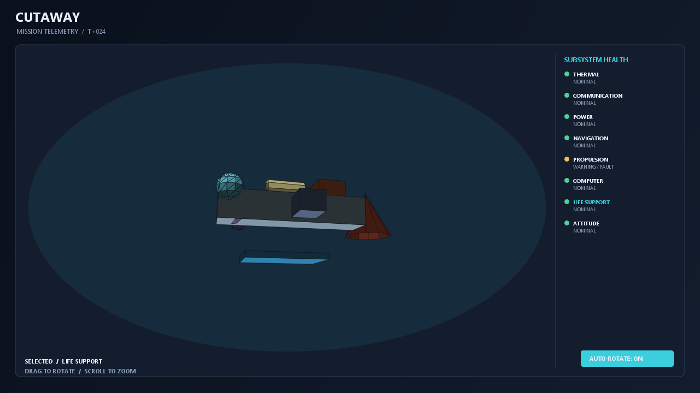
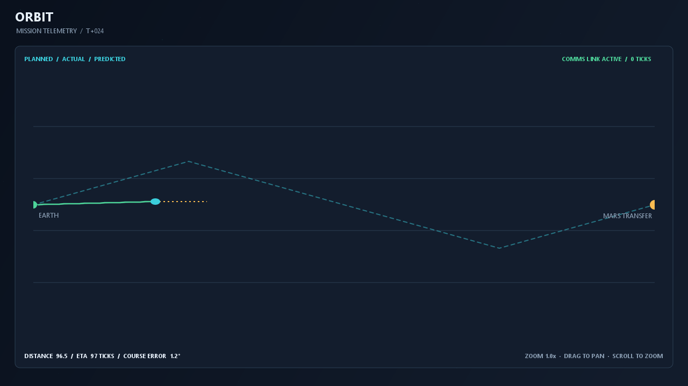
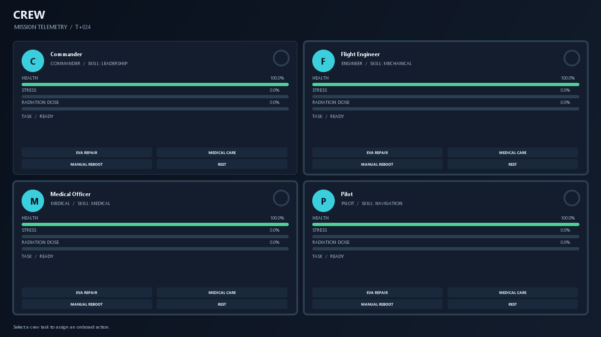
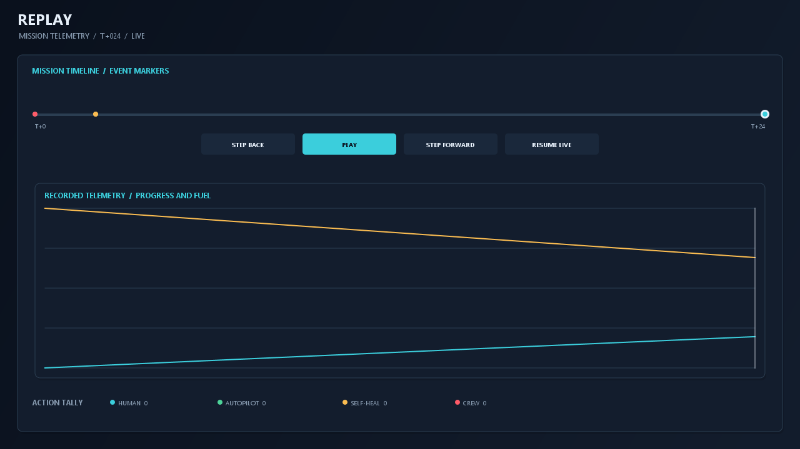

A complete flight operations guide to commanding the simulator: cockpit screens, telemetry gauges, flight maneuvers, and emergency protocols.
You do not need to know Java or spacecraft engineering to use this guide.
OrbitalX is a learning simulator: it creates a pretend spacecraft mission, shows changing instrument readings, introduces equipment problems, and lets you choose how those problems are handled.
Project: OrbitalX — a Java desktop and command-line simulator
For an OOP presentation: follow the Dashboard fuel-recommendation example in chapters 8–10. It traces one feature from the visible button, through the controller and engine, to the concrete action and spacecraft object.
Important distinction: when this guide names a class or interface, it refers to code that exists in this project. The OOP chapter explains what that code does while the simulator is running.
Start here
OrbitalX is a simulation, not a real spacecraft connection. Everything it changes—fuel, oxygen, faults, crew condition, and mission progress—is inside the program. It is safe to experiment with.
Think of it as a pretend spacecraft dashboard on your computer. You choose a mission, watch the readings change, and decide how to respond to simulated problems. You do not need to operate every feature at once: begin with Free Flight and learn one screen at a time.
What is a mission-control simulator?
Imagine a vehicle travelling toward a destination. It has engines, power, temperature control, communications, navigation, life support, a computer, supplies, and crew. The program advances the mission in small steps called ticks. On each tick, the simulated spacecraft consumes resources, instruments report values, the software looks for trouble, and recommendations may appear.
A tick is a simulation step—not necessarily one real second. The GUI controls how quickly those steps run on your computer.
Words you will see
Word
Simple meaning
Telemetry
Measurements sent by the spacecraft: fuel, temperature, pressure, battery, signal, and more.
Subsystem
One part of the craft, such as Propulsion, Power, Thermal, or Life Support.
Fault
A simulated problem, such as a fuel leak or broken antenna.
Recommendation
A suggested response, which you can preview, execute, or dismiss.
Autonomy
How much authority the onboard autopilot has to take action.
Uplink delay
A simulated wait before a command from mission control reaches the craft.
Replay
A view of recorded earlier mission states; it does not rewind the live craft.
GUI
The graphical app: windows, screens, buttons, and pictures that you click.
CLI / Console
A text command area where you type a word or instruction and press Enter.
Tick
One simulated time-step. It is not necessarily one real-world second.
Source code
The Java files that explain how the app is built; you can use the app without editing them.
Class / object
In this project, a class is a Java definition such as FuelTank; a running object is one actual fuel tank belonging to this simulated spacecraft.
First-time recommendation: run the GUI, open Planner, select Free Flight and EASY, leave the seed at 42, then launch. Watch the Dashboard before trying a fault scenario.
The central design idea is object-oriented programming (OOP). OrbitalX represents spacecraft parts, crew, sensors, faults, commands, and views as cooperating Java objects. The final chapter maps these real classes to abstraction, encapsulation, inheritance, polymorphism, and composition.
1. Install, build, and start
What you need
A Windows computer (this guide's commands use Windows).
Java Development Kit (JDK) version 17 or newer. The JDK includes both java and javac. A Java runtime alone is not enough to compile the project.
Step A: get the project folder
Open the project page: https://github.com/Yash230306/OrbitalX.
On GitHub, click the green Code button, choose Download ZIP, and wait for the ZIP file to download.
In File Explorer, right-click the downloaded ZIP and choose Extract All. Open the extracted project folder. The correct folder contains run.bat, compile.bat, src, and docs.
Step B: install/check Java
Install a JDK 17-or-newer build, such as Eclipse Temurin, using its Windows installer. If the installer offers to add Java to PATH, enable that option.
Open PowerShell and type java -version, then javac -version. Both commands should report a version of 17 or newer. If PowerShell says a command is not recognized, finish the JDK installation and open a new PowerShell window.
Step C: start the graphical app
Open the extracted OrbitalX project folder in File Explorer. Check that you are in the folder containing run.bat, not one folder above or below it.
Click the File Explorer address bar, type powershell, and press Enter. PowerShell opens in that folder.
Type the command below and press Enter. The script compiles the Java source and then opens the desktop app.
.\run.bat
The first successful build prints Compiled OK. The desktop window should then appear. Keep the project files together; the scripts rely on the project folder structure.
The window opens on Dashboard. Click Planner in the left navigation rail to set up a new mission. The window needs a usable area of at least about 1280×800; maximize it if some controls look clipped.
What the project folders are for
Folder / file
Plain-language purpose
src\main\java
The Java source code that makes the application.
docs
User guides, architecture notes, OOP maps, diagrams, and example reports.
out
Generated compiled files, exports, logs, and screenshots. It is created or filled when you run commands.
run.bat
Compiles and starts the app in the selected mode.
compile.bat
Compiles the program without opening the GUI.
Other useful launch commands
Command
What it does
.\compile.bat
Compile the program only; useful when checking whether Java/build setup works.
.\run.bat --cli
Start the text-based mission console in the same PowerShell window.
.\run.bat --selftest
Run the built-in regression checks. This is a test mode, not the normal app.
.\run.bat --screenshots out\screenshots
Render all ten views in four themes at two sizes (80 images) without opening the GUI window.
Important: run these commands from the OrbitalX folder. If PowerShell says the script is not found, you are probably in the wrong directory. If javac is not recognized, install a JDK (not only a Java runtime) and reopen PowerShell.
On Linux/macOS, use ./run.sh, ./run.sh --cli, and ./compile.sh.
2. Your first mission, step by step
These steps assume the desktop window is open. The left rail changes screens; it does not create a second mission.
Open Planner. Click Planner in the left navigation. In OrbitalX, a view is one page of the mission-control window.
Set the destination. Open DESTINATION and choose Moon for a short first trip.
Set the craft. Open SPACECRAFT and keep Explorer for a balanced first run.
Set difficulty and scenario. Choose EASY and Free Flight. This avoids scripted failures while you learn the gauges.
Keep the seed. Leave 42 in DETERMINISTIC SEED so the run is repeatable. This number controls the simulation's repeatable random choices; it is not a password or real launch code.
Keep Chaos Director off. It is normally off in the first Planner screenshot. Leave it off until you want random extra events.
Read the brief. Check the one-line summary at the bottom of Planner. It should match the choices you made.
Click LAUNCH MISSION. Wait for the visible 3-2-1 countdown. The app configures and starts the mission when the countdown ends.
Observe the Dashboard. Click Dashboard on the left. Read the resource cards and mission progress. The simulation may already be ticking; use the top LAUNCH button to pause before taking time to inspect.
Explore without changing anything. Click Cutaway, Orbit, Systems, Crew, Replay, Console, Reports, and Settings in the left rail. Return to Dashboard to see the same mission.
Practice one response. On a later run, choose Fuel Leak. When an advisor card appears, read its explanation and risk label, click PREVIEW first, then decide whether to EXECUTE or DISMISS.
Pause or continue. The top LAUNCH button toggles the live mission between running and paused. Space does the same.
Review and save. Click Reports, read the current outcome and grade, then click EXPORT HTML or EXPORT CSV. You can also use HTML/CSV in the top bar.
Longest trip (160 units), 5-tick uplink delay and a harsher environment.
More demanding play.
Spacecraft choices
Craft
Trade-off
Explorer
Balanced supplies and three crew.
Freighter
More fuel, less oxygen, two crew, and slower progress.
Crew Capsule
Four crew, larger oxygen supply, and stronger life support, but less fuel.
Difficulty
EASY reduces fault pressure and allows a larger response window. NORMAL is the standard setting. HARD raises pressure and shortens the time available for a response. These affect the simulation, not your computer's performance.
3. Every screen
The navigation rail contains ten views. All display the same live mission unless the Replay view has moved to an earlier recorded tick.
First, understand the window around each screen
The ten screenshots in this guide show the large center area only. The running desktop app also has a top control bar, left navigation rail, and footer.
Window area
What it does
What to click / type
Top bar: LAUNCH
Starts a stopped mission or pauses a running one. If the mission has ended, it resets before starting again.
Click to run/pause. The exact status appears in the footer.
Top bar: AUTONOMY
Cycles response authority in order: Manual, Timed Autopilot, Full Auto.
Click once per change. Read the new mode in the footer/status or mission state.
Top bar: SELF-HEAL
Enables or disables automatic approved safe repairs.
Click to toggle. This is separate from the Autonomy mode.
Top bar: THEME
Cycles the four color themes and rebuilds the shell in that theme.
Click repeatedly to return to the theme you want.
Top bar: HTML / CSV
Saves the current mission report or telemetry spreadsheet.
Click HTML or CSV. Files are written to out\mission-report.html and out\telemetry.csv.
Top bar: N T/S
Sets simulation speed in ticks per second.
Click to increase by 1; after 20 it cycles back to 1.
Left navigation rail
Switches the center area to one of the ten named views.
Click the view name. This is the easiest way to navigate when learning.
Footer event ticker
Displays the latest mission event and severity.
Click to open recent events; choose All severities or a severity filter, then an event to show it.
Footer command field + SEND
Sends a typed CLI command to the same mission used by the GUI.
Type a command such as help or status, then press Enter or click SEND.
Footer status / REPLAY badge
Reports command results and mission status. REPLAY indicates history is selected.
Display only; use the Replay view's controls to return to live history.
Keyboard note: the small numbers printed beside navigation buttons are 1=Planner, 2=Dashboard, …, 9=Reports, 0=Settings. Keyboard shortcuts use a different mapping: 0=Planner, 1=Dashboard, …, 9=Settings. Click the view name if you are unsure.
View
What it is for
What you can do or learn
Planner
Set up a new mission.
Choose destination, craft, difficulty, scenario, deterministic seed, and chaos setting; launch after the countdown.
Inspect the eight subsystem health indicators; drag to rotate, scroll to zoom, and toggle auto-rotation.
Orbit
See the journey.
Compare planned, actual, and predicted tracks; inspect distance/ETA and communications status; drag to pan and scroll to zoom.
Systems
Investigate an equipment subsystem.
Select an item in the subsystem list to view its health, faults, sensor readings/history, and dependency relationships.
Crew
Check crew condition and assign work.
Review health, stress, radiation dose, and task status. Assign EVA Repair, Medical Care, Manual Reboot, or Rest where available.
Replay
Study earlier snapshots.
Scrub the timeline, use Step Back/Forward or Play, and choose Resume Live when finished. Replay pauses live ticking while reviewing history.
Console
Type mission commands inside the GUI.
Run commands, see their output, use Up/Down for command history and Tab for completion.
Reports
Summarize mission performance.
Read the HTML preview, grade, score, action counts, achievement gallery; export HTML or CSV.
Settings
Personalize presentation.
Choose a theme, sound alerts, animation quality, screen effects, FPS display, UI scale, and sound volume. Preferences persist.
Settings note: theme, sound alerts, screen effects, and the FPS counter affect the running app. Animation quality, UI scale, and sound volume are saved, but are not currently applied to rendering or audio.
Illustrated walkthrough: the next ten pages show a verified screenshot of every application view and explain the controls and tasks available on each screen. Screenshots use the Dark Mission theme.
Color hints: green usually means nominal, amber indicates warning, red indicates critical, blue can indicate safe mode, and gray can indicate a failed item. Read the text labels as well as color.
Screen 1 of 10 · Planner
Use the Planner to set up or restart a mission before the simulation begins.
Planner — choose the mission destination, spacecraft, difficulty, scenario, seed, and chaos setting, then launch.
DESTINATION: open the list and choose Moon, Mars Transfer, or Asteroid Belt. This changes trip length and the modeled environment.
SPACECRAFT: select Explorer, Freighter, or Crew Capsule. The craft choices trade fuel, oxygen, life support, speed, and crew capacity.
DIFFICULTY: select EASY for a forgiving learning run, NORMAL for standard conditions, or HARD for more pressure and less response time.
SCRIPTED SCENARIO: choose Free Flight for no scripted fault, or a scenario such as Fuel Leak to practice responding to an event.
DETERMINISTIC SEED: keep 42 to make the run reproducible, or type another whole number. ROLL DICE fills in a random seed for you.
CHAOS DIRECTOR: click the toggle to show ON/OFF. When enabled it can add randomized events on top of the selected scenario.
Brief: read the summary line before launch. It updates as you change the selectors; hover for the destination profile and difficulty guidance.
LAUNCH MISSION: click once. A non-integer seed is rejected with a red message. A valid seed starts a 3-2-1 countdown; the app then configures and starts the mission.
Launching a new plan resets the current mission. Export a report first if you need to keep its results.
Screen 2 of 10 · Dashboard
The Dashboard is the main live-flight overview: it brings together resource readings, mission health, and recommended responses.
Dashboard — the example shows fuel, battery, oxygen, temperature, cabin pressure, radiation, throttle, operating limits, and a fuel-margin recommendation.
Gauge cards: fuel, battery, oxygen, temperature, cabin pressure, and radiation are read-only meters. A status or estimate next to a meter is informational; it is not a button.
THR slider: drag its handle up or down to request more or less throttle. The operating limits shown along the bottom constrain the request.
Limit tiles: click a tile such as MAX THROTTLE or MIN BATTERY to change its limit. Repeated clicks step the limit; going past its design value is an intentional override and can make the simulated mission unsafe.
Advisor card: read the title, explanation, risk/cost label, and response window before acting.
PREVIEW: calculate a short what-if for that recommendation. Read the resulting message for estimated fuel, outcome, critical timing, and side effects; the preview is not the same as executing the action.
EXECUTE: ask the controller to perform that recommendation on the live simulated craft.
DISMISS: remove that recommendation from your active list without carrying out its action.
Master-caution area: click the caution summary to expand its details; click it again (or click the open panel) to collapse. Individual warning tiles are indicators, not buttons.
Mission progress panel and status: read-only view of estimated progress, remaining mission information, and caution. Use LAUNCH in the window's top bar to pause or continue.
Screen 3 of 10 · Cutaway
Use the Cutaway to inspect the spacecraft model and the health summary for its major subsystems.

Cutaway — the model is paired with subsystem status indicators so a fault can be related to a spacecraft component.
Spacecraft model: click a visible component to highlight its subsystem; click-drag to rotate the camera; use the mouse wheel to zoom.
AUTO-ROTATE: ON/OFF: click the control at the lower right to start or stop automatic rotation.
Subsystem health list: read the color and status for Navigation, Propulsion, Computer, Life Support, Attitude, Thermal, Communication, and Power. The list is a legend, not a row of selection buttons.
Selected label: shows the component chosen on the model. This screen is mainly for visual inspection; it does not repair a fault.
Screen 4 of 10 · Orbit
The Orbit view shows where the mission is going and how far it has progressed along its route.

Orbit — inspect the planned, actual, and predicted course, destination, distance remaining, estimated time, and communications signal.
Route display: compare the planned path, the recorded actual trail, and the predicted path. Earth, the vehicle, and destination are markers, not buttons.
Pan and zoom: click-drag to move the plot; scroll the mouse wheel to zoom in/out.
Distance / ETA: read the remaining distance and estimated ticks; these are status values, not clickable controls.
Uplink / signal: monitor delay and communications. Change uplink delay from the Console command or applicable shell controls, not by clicking the Orbit labels.
Threats: use any threat marker as information. Respond through the Dashboard advisor; evasive actions may cost fuel.
Screen 5 of 10 · Systems
Use Systems to diagnose a specific subsystem rather than relying only on the overall Dashboard.
Systems — select a subsystem to inspect its status, active faults, sensor trend, and dependency relationships.
Subsystem list: click Navigation, Propulsion, Computer, Life Support, Attitude, Thermal, Communication, or Power. The selected row is highlighted.
Telemetry details: read health, active fault names, sensor ID/value/unit, and the sensor-history sparkline. They update with the mission; they are not editable fields.
Dependencies / cascade flow: read the linked subsystem names. A warning-colored moving marker means a dependency effect is propagating; the graph is informational, not a button.
To change the mission or fix a problem, use the Planner, Dashboard recommendations, Crew tasks, or Console commands; the Systems view is a diagnostic display.
Screen 6 of 10 · Crew
The Crew view tracks people on board and lets mission control assign work.

Crew — each card shows role, health, stress, radiation dose, current task, and available assignments.
Each crew card: read the person's role and skill, health, stress, radiation dose, and task/readiness. The circular indicator shows task progress; the meters do not accept clicks.
EVA REPAIR: assign exterior repair work when a suitable repair is needed and conditions permit it.
MEDICAL CARE: assign a medical task to help an injured or unwell crew member.
MANUAL REBOOT: assign crew work to restart a computer when appropriate.
REST: give the crew member a rest task rather than a repair.
Click the task button inside the chosen person's card. Tasks are only accepted when the person is alive and not already busy; the message at the bottom reports assignment or rejection. A running task takes ticks to finish.
Screen 7 of 10 · Replay
Replay is a review tool for recorded mission snapshots. It does not roll back or rewrite the live spacecraft.

Replay — review recorded timeline markers, telemetry curves, and action totals.
Timeline: click or drag the marker to jump to a recorded tick. Colored event dots show where events occurred; the dots are markers, not separate buttons.
STEP BACK: move to the previous recorded snapshot.
PLAY / PAUSE: start or stop playback through the recorded snapshots. Starting at the end begins review from the start.
STEP FORWARD: move to the next recorded snapshot.
RESUME LIVE: leave replay and return to the current live mission. Use this before expecting normal mission progression to continue.
Telemetry graph / action tally: compare recorded progress and fuel and see who acted (human, autopilot, self-heal, or crew). These are display-only.
Screen 8 of 10 · Console
The in-app Console is a command line for controlling and inspecting the same simulation shown in the other views.
Console — enter a command in the bottom field and read the simulator's response in the terminal area.
Output panel: read the welcome/help text and the results of commands. It is read-only; you cannot type into it.
Command field: click the input field at the bottom, type one command, and press Enter. Invalid commands display an error and the console remains available.
HELP / STATUS: type help to list accepted command forms and status to see the current mission summary.
Mission controls: use commands such as tick 5 (advance five steps), throttle 60, scenario 1, or inject fuel-leak.
Autonomy: use autonomy manual, autonomy timed, or autonomy full. Toggle approved safe repairs with heal on / heal off.
Advice: type preview <recommendation-id> before exec <recommendation-id>; use dismiss <recommendation-id> to reject advice. Recommendation IDs are shown by the app/help/status rather than guessed.
Command history and completion: Up/Down recalls a command typed in this Console view. Tab completes a known command prefix; if several match, the possible names are printed.
There is no separate Run button in this screen: Enter submits the command. The surrounding window also has its own footer command field and SEND button.
Screen 9 of 10 · Reports
Reports summarizes what happened and provides exportable records of the mission.
Reports — inspect the live or completed mission summary, score, action counts, event history, and achievements.
HTML REPORT PREVIEW: read the generated report in the scrollable preview pane. It is not an editor.
MISSION GRADE: read the current outcome, score, grade description, tick/progress, action totals, and achievements. An in-progress mission is not a final result.
EXPORT HTML: save out\mission-report.html.
EXPORT CSV: save telemetry to out\telemetry.csv, for example to open in spreadsheet software.
REFRESH: regenerate the preview after mission activity. The view also refreshes as it receives new snapshots.
Screen 10 of 10 · Settings
Settings contains display, audio, animation, and accessibility preferences. Preferences persist across application restarts.
Settings — choose a theme and adjust available presentation and audio preferences.
Color Theme: select the theme from the list. THEME in the top bar also cycles themes.
Sound alerts: toggle synthesized click sounds and event alerts on/off.
Show FPS counter: toggle the frames-per-second reading in Render Performance. It is a display, not a performance-control slider.
Animation quality, UI scale, Sound volume: the selection controls save a preference, but this build does not yet apply these three choices to rendering or audio.
There is no Apply button; selections are saved as you make them and persist after restarting the app.
4. Faults, advice, and autonomy
The simulator demonstrates 15 kinds of equipment or sensor problem. A problem can change readings, reduce mission performance, and create one or more recommendations. Some problems are introduced by a scenario; you can also inject faults from the command line.
Problem
What you may notice
Typical response
Fuel leak / low fuel
Fuel falls faster; arrival may be at risk.
Reduce throttle, cross-feed reserve fuel, or abort a burn.
Overheating / coolant failure
Temperature rises.
Activate radiators, restart the coolant pump, or reduce throttle.
Power / solar failure
Battery trends down or solar generation drops.
Shed nonessential load or reorient the panels; crew EVA repair can help.
Communication dropout
Signal disappears; commands may be delayed or unavailable.
Switch to backup antenna.
Gyro / navigation drift
Pointing or course error grows and progress may slow.
Recalibrate gyro or make a course correction.
Scrubber failure / low oxygen
Atmosphere readings worsen.
Switch to backup scrubber or enter safe mode.
Hull breach
Cabin pressure and oxygen fall.
Seal the breach (uses sealant); onboard crew repair may be assigned.
Radiation storm
Radiation rises; crew and electronics can be affected.
Enter radiation shelter and reduce exposure.
Debris threat
A collision threat appears on the Orbit view.
Evasive maneuver; it costs fuel.
Computer fault
Computer error or frozen telemetry.
Reboot or switch to backup computer. Autopilot/self-healing may temporarily be unavailable.
Engine misfire
Thrust efficiency drops.
Switch to backup engine or reduce throttle.
Sensor drift, spike, or stuck value
A measurement looks biased, jumps, or stops changing.
Switch to the backup sensor.
Unsafe limit override
An operating limit exceeds its design value.
Restore safe limits. The program can reject unsafe changes without an override.
Who is allowed to act?
Mode
Behavior
MANUAL
You decide on costly actions. If Self-Heal is on, the system may still perform an approved safe, reversible repair.
TIMED_AUTOPILOT
The autopilot waits for the response window before performing eligible costly actions; a human can intervene.
FULL_AUTO
The autopilot handles eligible recommendations immediately; it may assign work to a suitable crew member.
Self-Heal is a separate setting from Autonomy. It handles safe actions—repairs that avoid fuel or limited supplies and do not override the operator. Turning it off disables automatic self-healing but does not itself switch the autonomy mode. If an automatic repair fails repeatedly or cannot safely handle a problem, it can be escalated for human attention.
Watch for costly actions. Evasive maneuvers and course corrections consume fuel; sealing a breach uses sealant. Preview recommendations when you are unsure, and check remaining resources before executing.
5. The 12 built-in scenarios
Scenario numbers are zero-based in the CLI; the Planner shows their names. Scheduled events occur after the mission has advanced to the listed approximate tick.
Index
Scenario
What it demonstrates
0
Free Flight
No scripted fault; a calm place to learn the controls.
1
Fuel Leak
Propulsion fuel leak.
2
Engine Trouble
Engine misfire, followed by overheating and coolant trouble.
3
Power Crisis
Solar failure and power management.
4
Lost in Space
Attitude sensor drift and navigation drift.
5
Antenna Blackout
Communications dropout.
6
Hull Breach
Cabin breach followed by scrubber failure.
7
Solar Storm
Radiation storm and sheltering.
8
Debris Alert
Two debris threats at different times.
9
Computer Crash
Computer fault and radiation storm.
10
Cascading Failure
Multiple sequential failures across propulsion, thermal, environment, computer, and life support.
11
Endless Chaos
Chaos Director can introduce randomized events when enabled.
A good practice run
Start Free Flight on EASY; observe the basic gauges and mission progress.
Start Fuel Leak on NORMAL; watch the fuel trend and read the recommendation card.
Preview the throttle recommendation, then execute it and compare what changes.
Try Manual, then Timed Autopilot, then Full Auto on another run.
Try Cascading Failure only after you are comfortable with the controls.
6. Using the command line
Start the CLI in PowerShell with .\run.bat --cli. It prints a help line. Type one command per line and press Enter. Type quit to leave. Commands are examples, not real spacecraft instructions.
Beginner sequence
help
status
scenario 1
uplink off
tick 4
status
preview reduce-throttle 10
exec reduce-throttle
report
quit
scenario 1 configures the Fuel Leak scenario; use inject fuel-leak instead when you want to add the fault directly to the current scenario. Do not use both in the same practice run. tick 4 advances four steps. The Preview command describes a possible future without advancing the live mission. Execute only after the recommendation exists.
Command reference
Command
Purpose / example
help, status
Show command help or current mission summary.
tick, tick 5
Advance one tick or the requested number of ticks.
throttle 60
Request a throttle percentage between 0 and 100, subject to current limits.
inject fuel-leak
Inject a supported fault. Fault names accept hyphens or underscores.
autonomy manual autonomy timed autonomy full
Choose response mode.
heal on / heal off
Enable/disable automatic safe repair.
uplink on / uplink off
Enable/disable command transmission delay.
limits limits MAX_THROTTLE 75
List or change an operating limit. Unsafe values require the explicit override option.
crew task Pilot REST
List crew or assign a crew task. Tasks: EVA_REPAIR, MEDICAL_CARE, MANUAL_REBOOT, REST.
preview reduce-throttle 10
Preview a recommendation for 10 future ticks.
exec reduce-throttle dismiss reduce-throttle
Execute or dismiss a currently available recommendation by ID.
scenario 10
Load a scenario (valid indexes 0 through 11).
config destination moon config craft explorer config difficulty hard
Change mission configuration and reset the mission.
seek 10
Inspect the recorded state at a tick. Use the GUI Replay view for playback controls.
report
Print a short textual mission summary.
quit
Exit the CLI.
CLI events are printed in the terminal and appended to out\mission-events.log. Report exports go to out\mission-report.html and out\telemetry.csv from the Reports view or corresponding export controls.
7. Useful controls, results, and troubleshooting
Keyboard shortcuts in the GUI
Shortcut
Action
0
Open Planner.
1–8
Open Dashboard, Cutaway, Orbit, Systems, Crew, Replay, Console, or Reports, respectively.
9
Open Settings.
Space
Start or pause mission ticking.
Ctrl+K
Open Console and focus the command field.
Ctrl+S
Capture all GUI screenshots into out\screenshots.
F11
Toggle full-screen mode.
Escape
Clear the command field.
The little numbers printed beside the left-rail names use a different mapping: Planner shows 1, Dashboard 2, …, Reports 9, and Settings 0. For the keyboard, use the mapping above; clicking a name avoids the mismatch.
Where files go
out\mission-report.html — report exported from the application.
out\telemetry.csv — comma-separated telemetry suitable for spreadsheet software.
out\mission-events.log — events recorded while using the CLI.
docs\sample-mission-report.html — included example report from a completed mission.
out\screenshots\ — screenshot matrix created by Ctrl+S or --screenshots.
docs\screenshots\ — representative screenshots included with the project.
Common problems
What happens
What to try
javac is not recognized
Install JDK 17+ (not just a runtime), add its bin directory to PATH, then close and reopen PowerShell.
.\run.bat is not recognized
Change directory to the project root (the folder containing run.bat) and try again.
The CLI exits after an error
Current builds print most invalid-command errors and keep running. Update to the latest repository branch if your copy predates the CLI fix.
The GUI is too large or clipped
The desktop window requires a usable area of at least about 1280×800. Maximize the window and check display scaling.
Nothing seems to happen
Check that the mission is running (top LAUNCH control or Space). Use status on the Console view to see the tick and mission state.
Commands seem to arrive late
Uplink delay may be enabled. Turn it off for immediate commands, or inspect the comms indicator and queued commands.
The report looks unfinished
A live mission report describes the current state. Let a mission complete to see a final outcome and grade.
No sound
Sound depends on the computer's audio output. Check the Sound alerts toggle; the app can use silent mode when no audio device is available.
Resetting: use Planner to configure a fresh mission, or choose a scenario again from the CLI. This resets mission state. Reports and logs under out are generated files; keep or copy anything you want before replacing it.
8. How OOP powers a real OrbitalX feature
Follow one actual user-facing feature: the Dashboard displays a fuel recommendation, the operator previews or executes it, and OrbitalX reduces the spacecraft's throttle. These steps happen because specific objects collaborate—not because the program merely defines classes with OOP-sounding names.
The Dashboard used in this walkthrough. Its recommendation buttons call the simulation API; they do not directly modify spacecraft fields.
The model owns the state.SimulationEngine has a Spacecraft; the spacecraft composes a FuelTank, its other resources, eight subsystems, and a crew roster. Resource values are not stored in the Dashboard.
The engine asks domain objects for advice. During tick(), the engine updates its model, calls DetectionEngine.scan(...), then calls AdvisorEngine.advise(modelCraft, ...).
A rule constructs a concrete action.FuelLowRule checks the spacecraft's fuel and supplies ReduceThrottleAction when its condition matches. The resulting Recommendation keeps the action with the advice.
The view sends a request through a contract.MissionView.handleDashboardClick(...) calls controller.previewRecommendation(...), executeRecommendation(...), or dismissRecommendation(...), depending on the button.
The facade forwards it.DefaultSimulationController implements SimulationController and forwards the requested operation to SimulationEngine.
The action changes the model safely. The engine retrieves the CorrectiveAction for the recommendation and calls execute(modelCraft). The concrete ReduceThrottleAction respects the craft's maximum-throttle limit before changing throttle.
All views get updated data. The engine publishes a new SimulationSnapshot. Views update their snapshot and repaint, so Dashboard, Systems, and Reports can show the same current mission.
Follow these methods in simulation/SimulationEngine.java, advisor/FuelLowRule.java, action/ReduceThrottleAction.java, gui/MissionView.java, and simulation/DefaultSimulationController.java.
A short, practical OOP presentation
Show the running feature. Start a Fuel Leak mission and open Dashboard. Point to a recommendation and explain that PREVIEW estimates a possible response while EXECUTE changes the simulated craft.
Show the boundary. In MissionView.java, find the handler for the dashboard's action buttons. Explain that the view asks the SimulationController to preview or execute; it does not change the fuel or throttle fields itself.
Show the rule and action. Open FuelLowRule.java and ReduceThrottleAction.java. The rule decides when the recommendation applies; the action contains the concrete throttle change.
Show the model and guard. Open Spacecraft.java and the resource/limit code. State is owned by model objects and changes go through methods that enforce limits.
Name the OOP ideas with evidence. Interface-based abstraction: SimulationController. Polymorphism: the engine calls rule/action implementations through shared types. Composition: the spacecraft contains resources, subsystems, and crew. Encapsulation: the view uses snapshots and controller methods rather than editing private model state.
Show the result. Return to Dashboard or Systems and point out that the view refreshes from the updated snapshot. The same mission state is also available to reports.
This demonstration answers “where is OOP used?†with one end-to-end feature. It is not necessary to memorize definitions: explain what each named object does and why the objects cooperate.
OOP concepts, mapped to implemented features
This table identifies where each concept is actually used and what job it performs in OrbitalX.
Concept
Where OrbitalX uses it
What this does in the running project
Abstraction through interfaces
SimulationController defines the operations used by GUI views. Sensor, AnomalyDetector, CorrectiveAction, and ReportVisitor define other interchangeable roles.
The GUI requests mission actions through a stable API; the engine can scan different detectors, run different actions, and produce different report formats without coupling every caller to each implementation.
Encapsulation
Spacecraft keeps state private; Resource.consume/refill validate changes; SimulationSnapshot and SubsystemSnapshot copy their lists.
The throttle limit and resource capacity are enforced where the data is owned. Views receive data to display instead of direct access to mutable engine internals.
Inheritance
BaseSensor shares reading/history logic with concrete sensors; concrete subsystems specialize Subsystem; SystemsView extends MissionView, which extends View.
Sensors and screens reuse shared identity, telemetry, tick updates, and rendering lifecycle while providing their own measurement, physics, or display behavior.
Polymorphism
DetectionEngine loops over AnomalyDetector implementations; AdvisorEngine loops over RecommendationRules; the engine executes a CorrectiveAction through its interface.
The same scan, advice, or execution call works with the actual threshold/rate detector, fuel rule, or throttle action selected for that mission. The caller does not need a separate workflow for each concrete object.
Composition
Spacecraft owns resources, a crew roster, and subsystems; each Subsystem owns sensors. SimulationEngine coordinates domain and service objects.
The spacecraft and mission are built from components with distinct responsibilities. A fault can change a subsystem, affect sensor readings, influence advice, and appear in reports.
Real polymorphism in detection
These are actual lines from DetectionEngine.scan(...) and AdvisorEngine.advise(...). Java calls each object's own implementation through the interface type:
for (AnomalyDetector detector : detectors)
detector.detect(sensor, tick).ifPresent(anomalies::add);
for (RecommendationRule rule : rules)
rule.evaluate(spacecraft, anomalies, tick)
.ifPresent(recommendations::add);
The configured detector objects include ThresholdDetector, RateOfChangeDetector, and ZScoreDetector. Advice uses individual rule objects such as FuelLowRule and OverheatingRule. Adding or changing one implementation does not require putting its internals into the GUI.
The selected action also has its own implementation
This excerpt is from ReduceThrottleAction.execute(...). The engine calls it through CorrectiveAction; Java dispatches to this concrete action, which enforces the throttle limit before updating the spacecraft:
int permitted = (int) Math.min(target,
craft.limits().get(LimitType.MAX_THROTTLE));
if (craft.throttle() <= permitted)
return success("Throttle already within target");
craft.setThrottle(permitted);
return success("Throttle reduced to " + permitted + "%");
Inheritance that supports actual screens
View owns the shared controller, theme, current snapshot, and tick-listener behavior. MissionView supplies the shared mission-control canvas. SystemsView and DashboardView specialize it with different drawing and interactions. The reusable part is the live-view lifecycle; the specialized part is each screen's job.
OOP also drives autonomy and reporting
The other major features use the same object-collaboration approach. These are not theoretical examples: they are the classes the mission engine uses.
Feature in OrbitalX
How the actual objects work together
Manual / timed / full autonomy
AutopilotController selects a concrete AutonomyPolicy for the selected mode and submits a ResponseContext to SelfHealingHandler → AutopilotHandler → CrewHandler → EscalationHandler. A handler either handles the recommendation or passes it to the next.
Recommendations and actions
A recommendation rule associates a condition with a concrete CorrectiveAction. The action exposes its ID, explanation, risk, and execution behavior, enabling the UI to show Preview / Execute / Dismiss.
Mission updates
SimulationEngine notifies tick listeners with snapshots and publishes typed events through EventBus. GUI views, logs, and listeners respond without each being hard-wired into the physics update.
Replay and what-if preview
The engine records immutable SimulationSnapshot values in history. A forked controller wraps a copied engine, allowing preview work to stay separate from the live run.
HTML and CSV reports
MissionReport.accept(visitor) hands the same report data to HtmlReportVisitor or CsvVisitor; each object creates a different output format.
Useful project files for a presentation
simulation/SimulationEngine.java — mission tick, service composition, advice, execution, and snapshots.
model/Spacecraft.java, model/Subsystem.java, resource/Resource.java — composition and protected mission state.
sensor/Sensor.java, detection/DetectionEngine.java, advisor/AdvisorEngine.java — interfaces and runtime polymorphism.
advisor/FuelLowRule.java, action/ReduceThrottleAction.java — one concrete recommendation and its concrete action.
api/SimulationController.java, simulation/DefaultSimulationController.java, gui/MissionView.java — the UI-to-engine boundary.
report/MissionReport.java, report/HtmlReportVisitor.java, report/CsvVisitor.java — report objects and alternate formats.
The companion docs\OOP_CONCEPT_MAP.md and class diagrams in docs\puml\ provide more implementation references. OrbitalX uses explicit switches for some finite choices; the design uses polymorphism where interchangeable behavior is useful.
OOP example: from subsystem objects to the Systems screen
This is a second concrete example of OOP in the project: the Systems screen is assembled from the live snapshot that the engine publishes. The screen does not reach into or mutate the engine's private model.
One view of the same mission data: selecting a subsystem changes its details without exposing or editing the spacecraft's private state.
Spacecraft constructs and owns its concrete subsystem objects; each Subsystem owns its sensors and fault/health state.
SimulationEngine.snapshot() creates API snapshot records from model state. SimulationSnapshot and SubsystemSnapshot defensively copy their lists.
View implements TickListener. Its onTick(...) stores the new snapshot and repaints the view.
SystemsView chooses the selected subsystem from snapshot.subsystems() and renders health, fault labels, sensor trends, and dependency links.
In code, SystemsView extends MissionView, MissionView extends View, and View implements TickListener. The screenshot therefore demonstrates inheritance and interface-based updates, while the displayed data comes from composed model objects through encapsulated snapshots.
Explore gui/SystemsView.java, gui/MissionView.java, gui/core/View.java, simulation/SimulationEngine.java, model/Spacecraft.java, and api/SubsystemSnapshot.java to follow this feature from model to screen.
That is enough to get started. Begin with Free Flight, learn the Dashboard, then explore one fault at a time. Use Preview when available, and treat recommendations as explanations you can learn from—not as a requirement to automate every decision.
OrbitalX is a Java educational simulation. It does not connect to, control, or provide advice for any real spacecraft.